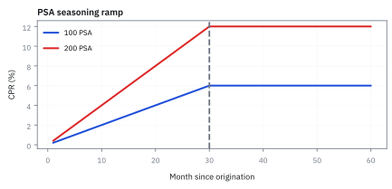
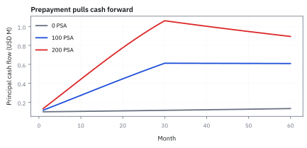
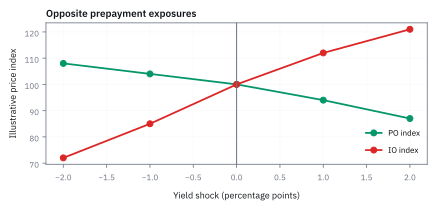
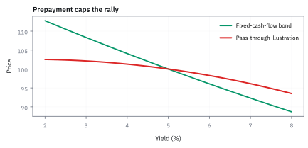
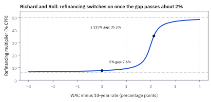

22.2 Prepayment Risk and the Public Securities Association Benchmark
คนผ่อนบ้านคืนหนี้เร็วขึ้นได้อย่างไร และทำไมคนถือ mortgage-backed security ต้องสนใจ
pool สินเชื่อบ้านใหม่ \$100 ล้าน ดอกเบี้ย 6% ผ่อน 30 ปี คืนก่อนกำหนดตามมาตรฐาน Public Securities Association (PSA) ถึงเดือนที่ 30 ยอดหนี้ต้นเดือนเหลือ \$89.99 ล้าน เดือนนี้คืนก่อนกำหนดกี่ดอลลาร์?
เฉลย: \$462,283 ค่างวดที่คิดใหม่จากยอดหนี้ที่เหลือคือ \$556,803 เป็นดอกเบี้ย \$449,962 เงินต้นตามตาราง \$106,840 ยอดที่เหลือคูณอัตรารายเดือน 0.5143% ได้เงินคืนก่อนกำหนด ซึ่งมากกว่าเงินต้นตามตาราง 4.33 เท่า
คำที่เปลี่ยน cash-flow forecast
- prepayment
- การคืน principal ก่อน scheduled maturity จาก refinance, home sale หรือ curtailment ใช้กำหนด unscheduled principal ของ pool
- conditional prepayment rate (CPR)
- อัตรา prepayment ต่อปีแบบ conditional annual rate ใช้สื่อพฤติกรรมรายปีของ balance ที่ยังอยู่
- single monthly mortality (SMM)
- ความน่าจะเป็น prepay ในหนึ่งเดือน conditional on surviving balance ใช้แปลง CPR ไป cash-flow engine รายเดือน
- Public Securities Association (PSA) benchmark
- มาตรฐาน scenario ที่ ramp CPR จาก 0 ถึง 6% ใน 30 เดือนที่ 100 PSA ใช้เปรียบเทียบราคาและความเสี่ยงไม่ใช่ forecast ของ borrower ทุกคน
- burnout
- ปรากฏการณ์ที่ borrower ซึ่ง refinance ง่ายได้ออกจาก pool แล้ว ผู้ที่เหลือ prepay ช้าลง ใช้จำกัดการ extrapolate incentive
- principal-only (PO)
- strip ที่รับเฉพาะ principal cash flow ใช้รับ exposure ต่อเวลาคืนเงินต้น
- interest-only (IO)
- strip ที่รับเฉพาะ interest cash flow บน balance ที่เหลือ ใช้รับ exposure ต่อ outstanding balance และ prepayment
- negative convexity
- ความสัมพันธ์ที่ duration ลดเมื่อ rates ลดและยืดเมื่อ rates สูงขึ้น ใช้อธิบายว่าทำไม pass-through hedge ยากกว่า bond ปกติ
- present value (PV)
- มูลค่ากระแสเงินสดในวันนี้หลัง discount ตาม curve ใช้เปรียบเทียบ PO และ IO บนหน่วย USD เดียวกัน
- option-adjusted spread (OAS)
- spread ที่ทำให้ present value ของ cash flow หลาย rate paths เท่ากับราคา ใช้เทียบ mortgage-backed security (MBS) ที่มี prepayment option โดยไม่สมมติ cash flow คงที่
- bond-equivalent yield (BEY)
- อัตราผลตอบแทนต่อปีแบบทบต้นทุกครึ่งปี ใช้เปรียบเทียบผลตอบแทนของ MBS กับพันธบัตรทั่วไปในตลาด
สัญกรณ์และหน่วย
| สัญลักษณ์ | ความหมาย | หน่วย |
|---|---|---|
| $\mathrm{CPR}_t$ | annual conditional prepayment rate ในเดือน $t$ | ต่อปี |
| $\mathrm{SMM}_t$ | monthly conditional prepayment probability | ต่อเดือน |
| $B^{\ast}_t$ | balance หลัง scheduled principal ก่อน prepayment | USD |
| $PP_t$ | unscheduled prepayment ในเดือน $t$ | USD ต่อเดือน |
| $y$ | อัตราที่ใช้คิดลดกระแสเงินกลับมาเป็นมูลค่าวันนี้ จะใช้ค่าเดียวทั้งเส้น หรืออ่านจาก curve ให้สอดคล้องกับ scenario ก็ได้ | ต่อปี |
| $PV_{PO},PV_{IO}$ | present value (PV): มูลค่าปัจจุบันของ principal-only และ interest-only strips | USD |
| $m$ | months since origination | เดือน |
| $r,\ r_f$ | ดอกเบี้ยเงินกู้ต่อเดือน และดอกเบี้ยที่ใช้คิดลดต่อเดือน | ต่อเดือน |
| $A,\ P_k,\ I_k$ | ค่างวด เงินต้นตามตาราง และดอกเบี้ยของงวดที่ $k$ | USD |
| $V_0,\ W_0,\ F_0$ | มูลค่าวันนี้ของ PO, IO และเงินกู้ทั้งก้อนเมื่อไม่มี prepayment | USD |
| $D_P,\ D_I$ | duration ของ PO และ IO | ปี |
| $f^{\rm inc},\ f^{\rm age},\ f^{\rm mon},\ f^{\rm burn}$ | สี่ตัวคูณของ Richard and Roll: แรงจูงใจรีไฟแนนซ์ อายุ pool ฤดูกาล และ burnout | ไม่มีหน่วย |
| $r_k(10),\ M_k$ | ดอกเบี้ย 10 ปี ณ เดือน $k$ และยอดหนี้ของ pool หลังเดือน $k$ | ต่อปี และ USD |
ที่มาที่ไป: ตัวเลือกที่ผู้กู้มีอยู่ แต่ไม่ได้จ่ายเงินซื้อ
ในสัญญาเงินกู้ซื้อบ้านทั่วไป ผู้กู้มีสิทธิชำระคืนเงินต้นก่อนกำหนด (prepayment) ได้ตลอดเวลาโดยไม่มีค่าปรับ การชำระก่อนกำหนดนี้เกิดจาก 4 สาเหตุหลัก:
1 การขายบ้าน (home sale) ซึ่งบังคับให้ผู้กู้ต้องปิดบัญชีเงินกู้เดิมทันที
2 การรีไฟแนนซ์ (refinancing) เมื่ออัตราดอกเบี้ยในตลาดลดลง ผู้กู้จะกู้เงินก้อนใหม่ที่ดอกเบี้ยถูกกว่ามาปิดหนี้ก้อนเก่า
3 การผิดนัดชำระหนี้ (default) สำหรับเงินกู้ที่มีประกัน หน่วยงานค้ำประกันจะจ่ายเงินต้นคงค้างคืนเต็มจำนวน
4 ทรัพย์สินเสียหาย (destruction of property) เงินสินไหมจากประกันภัยจะถูกนำมาชำระหนี้คงค้างทั้งหมด
borrower option มาถึง investor อย่างไร
สิทธิการชำระคืนก่อนกำหนดทำให้ผู้ลงทุนเผชิญความเสี่ยงสองด้านที่ตรงข้ามกัน: เมื่ออัตราดอกเบี้ยลดลง ผู้กู้จะแห่รีไฟแนนซ์ ทำให้เงินต้นไหลกลับมาเร็วเกินไป ผู้ลงทุนต้องนำเงินก้อนนี้ไปลงทุนใหม่ในตลาดที่ผลตอบแทนต่ำลง เหตุการณ์นี้เรียกว่า contraction risk
ในทางกลับกัน เมื่ออัตราดอกเบี้ยพุ่งสูงขึ้น ผู้กู้จะหยุดรีไฟแนนซ์ เงินต้นที่ผู้ลงทุนควรได้รับกลับมาชะลอตัวลง เงินทุนจึงถูกล็อกไว้กับดอกเบี้ยต่ำในอดีต แทนที่จะได้เงินกลับมาลงทุนในสินทรัพย์ใหม่ที่ให้ผลตอบแทนสูง เหตุการณ์นี้เรียกว่า extension risk
พฤติกรรมนี้ทำให้ pass-through ไม่ใช่พันธบัตรธรรมดาที่มีอายุคงที่ และทำให้ราคาของมันมีพฤติกรรมแปลกประหลาด
ขั้นที่ 1 — แปลง CPR เป็น SMM
อัตราที่ตลาดประกาศเป็นรายปี แต่การคำนวณเดินเป็นรายเดือน ต้องแปลงให้ถูกก่อน สูตรข้างล่างแสดงว่าการแปลงเป็นเรื่องของผลคูณ ไม่ใช่ผลหาร ด้วยเหตุผลเดียวกับที่หัวข้อ 20.6 ใช้กับโอกาสรอดจากการเจ๊ง
เหตุผลทั้งหมดอยู่บรรทัดแรก การที่ยอดหนี้รอดจากการชำระคืนก่อนกำหนดตลอดปี คือการรอดผ่านสิบสองเดือนติดกัน จึงเป็นผลคูณของสิบสองก้อน ไม่ใช่ผลบวก
ที่เหลือคือพีชคณิต ถอดรากที่สิบสองทั้งสองข้าง แล้วย้ายข้าง ได้อัตรารายเดือนที่สอดคล้องกับอัตรารายปีที่ประกาศ
แทนเลขจริงได้ 0.514% ต่อเดือน เทียบกับการหารสิบสองตรง ๆ ซึ่งให้ 0.005
ส่วนต่างดูเล็ก แต่มันสะสมข้ามงวดและข้ามสัญญา และการหารสิบสองคือความผิดพลาดที่พบบ่อยที่สุดในโค้ดเรื่องนี้ เพราะมันดูสมเหตุสมผลจนไม่มีใครตรวจ
เช็กอัตรารายเดือนด้วยการทบกลับหนึ่งปี
หากสมมติความเร็วคงที่ตลอดปี ผู้กู้หรือยอดหนี้ที่ยังอยู่หลังแต่ละเดือนเหลือสัดส่วนเดียวกัน จึงต้องคูณสัดส่วนที่เหลือสิบสองครั้งให้ได้ 0.94
ถ้าใช้ 6% หารสิบสองได้ 0.5% แล้วทบกลับจริง จะได้ CPR เพียง 5.8377% จึงไม่ตรง 6% ความต่างเล็กต่อเดือนกลายเป็นเงินจำนวนมากเมื่อ pool ใหญ่
ใน PSA ค่า CPR เปลี่ยนทุกเดือนช่วง ramp การแปลงในแต่ละเดือนเป็นอัตรารายเดือนเทียบเท่าของ CPR ณ เดือนนั้น ไม่ได้บอกว่า CPR ของปีแรกทั้งปีเท่ากับ CPR เดือนสุดท้าย
ขั้นที่ 2 — นิยามของเส้นมาตรฐานที่ตลาดใช้พูดกัน
บรรทัดนี้เป็น นิยาม ตามธรรมเนียมของตลาด ไม่ใช่ผลที่พิสูจน์ อ่านรูปได้: อัตราเริ่มจากศูนย์แล้วไต่ขึ้นเป็นเส้นตรงตามอายุของเงินกู้ จนถึงเพดานหนึ่งแล้วคงที่ตลอดไป เหตุผลที่ไต่ขึ้นช่วงแรกคือเงินกู้ใหม่ ๆ ยังไม่มีใครรีไฟแนนซ์หรือย้ายบ้าน ส่วนตัวคูณข้างหน้าคือการพูดว่าเร็วกว่าหรือช้ากว่า เส้นมาตรฐานกี่เท่า ซึ่งเป็นภาษาที่คนในตลาดใช้คุยกัน จุดสำคัญคือนี่เป็นแค่ธรรมเนียมในการรายงาน ไม่ใช่การพยากรณ์ว่าจะเกิดอะไรจริง
ใส่เดือนนับจากออก loan $m$ และตัวคูณความเร็ว $k$ ที่ $k=1$ เรียก 100 PSA; ที่ $k=2$ เรียก 200 PSA
คำสั่ง $\min$ ทำให้ CPR เพิ่มเดือนละ 0.2% แค่จนถึงเพดาน 6%, แล้วหยุดเพิ่ม จึงเป็น ramp ไม่ใช่เส้นคงที่ตั้งแต่วันแรก
ผลลัพธ์คือ CPR รายปีของเดือนนั้น เพื่อนำไปแปลงเป็น SMM ก่อนคำนวณเงินที่กลับจริง
อายุเฉลี่ยของกระแสเงินต้น (Average Life)
โจทย์ให้ถ่วงน้ำหนักเดือนที่ได้รับเงินต้นด้วยจำนวนเงินต้นที่คืนในแต่ละงวด แล้วแปลงเป็นหน่วยปี
ตัวเศษคือผลรวมของเดือนที่ $k$ คูณกับเงินต้นรวม $P_k$ ซึ่งประกอบด้วยเงินต้นตามกำหนดบวกเงินต้นที่ชำระก่อนกำหนด
หารด้วยเงินต้นเริ่มต้น $B_0$ และหาร 12 เพื่อแปลงจากเดือนเป็นปี
เมื่อความเร็ว PSA สูงขึ้น เงินต้นจะไหลกลับมาเร็วขึ้น ทำให้ Average Life ลดลงอย่างต่อเนื่อง เช่น pool 30 ปีอาจมี Average Life เหลือเพียง 11.67 ปีที่ 100 PSA
อัตราผลตอบแทนเทียบเท่าพันธบัตร (BEY)
โจทย์ให้แปลงผลตอบแทนรายเดือนทบต้นของ MBS เป็น bond-equivalent yield (BEY) ทบต้นทุกครึ่งปีตามมาตรฐานตลาด
กระแสเงินของ mortgage เข้าเป็นรายเดือน อัตราผลตอบแทนภายในรายเดือนคือ $y_m$
พันธบัตรทั่วไปในสหรัฐฯ จ่ายดอกเบี้ยทุก 6 เดือน จึงทบต้นรายเดือน 6 ครั้งให้เป็นครึ่งปี ลบหนึ่ง แล้วคูณ 2 เพื่อเทียบเป็น Bond-Equivalent Yield
เนื่องจากสมมติการชำระก่อนกำหนดคงที่ไม่ได้สะท้อนความเสี่ยงอัตราดอกเบี้ยจริง ตลาดจึงใช้ Option-Adjusted Spread หรือ OAS ในการวัดมูลค่าส่วนเพิ่มแทน
แล้วเอาไปใช้ทำอะไรได้จริงบ้าง
การจำลองพฤติกรรมการชำระก่อนกำหนด เป็นสิ่งที่ตัดสินราคาของตราสารกลุ่มนี้ทั้งหมด
ใช้ประมาณกระแสเงินที่จะได้รับจริง ซึ่งต่างจากตารางการชำระมาก
ใช้เป็นภาษากลางในการสื่อสารความเร็วของการชำระก่อนกำหนด ซึ่งตลาดใช้มาตรฐานเดียวกัน
ใช้ทดสอบว่าถ้าอัตราดอกเบี้ยลดลง ราคาจะเป็นอย่างไร ซึ่งไม่ได้ขึ้นเสมอไปเหมือนตราสารหนี้ปกติ
Figure 22.2a — PSA เป็น ramp ไม่ใช่เส้นคงที่

เส้นแสดง 100 และ 200 PSA: ทั้งคู่ ramp ช่วง 30 เดือนแรกแล้ว plateau การใช้ CPR 6% ตั้งแต่เดือนแรกกับ pool ใหม่จึงไม่ใช่ 100 PSA และจะเร่ง principal อย่างผิดรูป
ขั้นที่ 3 — นิยามของลำดับการหักเงินต้นในแต่ละเดือน
สามก้อนนี้เป็น นิยาม ของลำดับที่เราเลือกคำนวณ ไม่ใช่ผลที่พิสูจน์ และลำดับนี้สำคัญมาก: หักเงินต้นตามกำหนดก่อน ตามขั้นที่ 2 ของหัวข้อ 22.1 แล้วค่อยคิดการชำระคืนก่อนกำหนดจากยอดที่เหลือ ไม่ใช่จากยอดต้นเดือน ถ้าสลับลำดับ จะได้ตัวเลขที่ต่างออกไป และไม่ตรงกับที่ตลาดคำนวณ บรรทัดสุดท้ายหักส่วนที่ชำระคืนก่อนกำหนดออก ได้ยอดค้างจริงปลายเดือน ซึ่งจะถูกใช้เป็นฐานคิดดอกเบี้ยของเดือนถัดไป
เริ่มจาก balance ก่อนงวด $B_{t-1}$ แล้วหัก scheduled principal $P_t$ ก่อน ได้ยอดชั่วคราว $B_t^{\ast}$.
คูณยอดชั่วคราวด้วย SMM เพื่อหา prepayment $PP_t$ จากนั้นหัก $PP_t$ อีกครั้งจึงได้ balance ปลายงวด $B_t$.
ลำดับนี้บอกว่าการผ่อนตามตารางเกิดก่อนการคืนเพิ่ม. Deal จริงอาจตั้งกติกาไม่เหมือนกัน จึงต้องอ่าน convention ก่อนเขียน engine
ผลที่ตามมา — ราคาโค้งผิดทาง และวัดออกมาเป็นตัวเลขติดลบได้
นี่คือเหตุผลที่ desk ที่ถือ MBS ต้องซื้อ option ไว้ป้องกันเสมอ การถือ MBS คือการขาย option ให้ผู้กู้ฟรี ๆ โดยไม่ได้เลือก ผลตอบแทนที่สูงกว่า Treasury ที่อายุเท่ากัน จึงไม่ใช่ของฟรี มันคือค่าพรีเมียมของ option ที่ถูกขายไปแล้วตั้งแต่วันที่ซื้อ
และเพราะ convexity ติดลบ การ hedge ด้วย duration อย่างเดียวจะพังทุกครั้งที่ตลาดขยับแรง ยิ่งขยับแรง ยิ่งผิดมาก และผิดไปในทางที่ขาดทุนทั้งสองทิศ
bond ธรรมดาจะได้กำไรตอนดอกเบี้ยลงมากกว่าที่ขาดทุนตอนดอกเบี้ยขึ้นเท่ากัน ความไม่สมมาตรที่เข้าข้างเจ้าของนี้คือ convexity บวก และเป็นของแถมที่ทุกคนชอบ
ลองบวกสองราคาที่ขยับเท่ากันคนละทาง ได้ 199 ซึ่งน้อยกว่าสองเท่าของราคากลาง แปลว่าขาขึ้นได้กำไรน้อยกว่าขาลงที่ขาดทุน ความไม่สมมาตรกลับด้านมาทำร้ายเจ้าของแทน
สาเหตุอยู่ที่ตัวเลือกของผู้กู้ที่พูดถึงในขั้นที่ 1 ดอกเบี้ยลง ผู้กู้รีไฟแนนซ์ เงินต้นกลับมาที่ราคาพาร์ ราคาจึงวิ่งขึ้นต่อไม่ได้ ส่วนดอกเบี้ยขึ้น ไม่มีใครรีไฟแนนซ์ เงินที่ควรกลับมาเร็วกลับยืดออกไป ราคาจึงตกหนักกว่าเดิม
ตรวจเองใน 20 วินาที กด (97.5+101.5-200)/(100*0.005**2) ต้องได้ $-400$ ถ้าเครื่องหมายออกมาเป็นบวก แปลว่าใส่ราคาผิดข้าง ไม่ใช่ตลาดแปลก
คำตอบ — การชำระเงินต้นและ prepayment เดือนที่ 30
คำถาม: pool สินเชื่อบ้านใหม่ \$100 ล้าน ดอกเบี้ย 6% ผ่อน 30 ปี ที่ 100 PSA ถึงเดือนที่ 30 ยอดหนี้ต้นเดือน \$89,992,478 เดือนนี้เงินต้นกลับมาเท่าไร และคืนก่อนกำหนดมากกว่าเงินต้นตามตารางกี่เท่า?
ของที่มี: ขั้นที่ 1 ถึง 3
1 ค่างวดคิดใหม่จากยอดหนี้ที่เหลือ 331 งวดได้ 556,802.62 เป็นดอกเบี้ย 449,962.39 และเงินต้นตามตาราง \$106,840.23
2 ยอดชั่วคราว 89,885,637.31 คูณ SMM 0.5143013% ได้ prepayment \$462,282.99
3 เงินต้นกลับรวม \$569,123.22 เป็น prepayment 81.23% และมากกว่าเงินต้นตามตาราง 4.33 เท่า
ตรวจเองใน 10 วินาที: 89.886 ล้าน × 0.00514 ≈ 0.462 ล้าน
แปลว่าอะไร: พ้นช่วง ramp แล้ว เงินต้นที่กลับมาส่วนใหญ่มาจากการคืนก่อนกำหนด ถ้าลืมคิดค่างวดใหม่แล้วใช้ค่างวดเดิม 599,550.53 เงินต้นตามตารางจะสูงเกินจริง \$42,747.90 ต่อเดือน
โค้ดตรวจการคำนวณ SMM, Prepayment และ Effective Convexity
import numpy as np
B, r, n = 100e6, 0.06 / 12, 360
for m in range(1, 31):
A = B * r / (1 - (1 + r) ** -(n - m + 1)) # payment recomputed on what is left
I = B * r
P = A - I
cpr = min(0.002 * m, 0.06)
smm = 1 - (1 - cpr) ** (1 / 12)
pp = (B - P) * smm
if m < 30:
B = B - P - pp
assert round(B) == 89992478 and round(P, 2) == 106840.23 and round(pp, 2) == 462282.99
assert abs(smm - 0.005143013) < 1e-9 and round(pp / P, 2) == 4.33
assert round(100e6 * r / (1 - (1 + r) ** -n) - I - P, 2) == 42747.9
p0, p_minus, p_plus, dy = 100.0, 101.5, 97.5, 0.005
assert abs((p_minus - p_plus) / (2 * p0 * dy) - 4.0) < 1e-9
assert abs((p_plus + p_minus - 2 * p0) / (p0 * dy ** 2) + 400.0) < 1e-6loop เดินตั้งแต่เดือนที่ 1 ถึง 30 แบบเดียวกับไฟล์ของคอร์ส คิดค่างวดใหม่ทุกเดือนจากยอดหนี้ที่เหลือ แล้วตรวจเงินของเดือนที่ 30 และ convexity จากราคาสามจุด
pass-through ของไฟล์คอร์ส PO/IO และ Richard and Roll
import numpy as np, math
B, r, season, flows = 400.0, 0.08125 / 12, 3, []
for t in range(1, 358):
A = B * r / (1 - (1 + r) ** -(360 - season - t + 1))
I, P = B * r, B * r
P = A - I
smm = 1 - (1 - min(0.002 * (t + season), 0.06)) ** (1 / 12)
pp = (B - P) * smm
if t == 1:
assert [round(v, 4) for v in (A, I, B * 0.075 / 12, P, pp)] == [2.9759, 2.7083, 2.5, 0.2675, 0.2675]
flows.append(P + pp)
B -= P + pp
flows = np.array(flows)
assert round((np.arange(1, 358) * flows).sum() / (12 * flows.sum()), 2) == 11.67
B0, n = 100000.0, 360
A = B0 * r / (1 - (1 + r) ** -n)
k = np.arange(1, n + 1)
Pk = (A - r * B0) * (1 + r) ** (k - 1)
Ik = A - Pk
for rf, v0, w0 in ((r, 23391, 76609), (0.005, 32681, 91162)):
d = (1 + rf) ** -k
assert round((Pk * d).sum()) == v0 and round((Ik * d).sum()) == w0
assert abs((k * Pk * (1 + r) ** -k).sum() / (12 * (Pk * (1 + r) ** -k).sum()) - 361 / 24) < 1e-9
RI = lambda gap: 0.28 + 0.14 * math.atan(-8.57 + 430 * gap)
assert round(RI(0.0), 4) == 0.0764 and round(RI(0.02125), 4) == 0.3523
assert round(RI(0.02125) * 0.5 * 1.0 * (0.3 + 0.7 * 0.95), 3) == 0.170assert ชุดแรกตรงกับไฟล์ Excel ของคอร์สทุกช่องของเดือนแรก ชุดกลางคือขั้นที่ 7 และชุดท้ายคือขั้นที่ 8
Figure 22.2b — กองสินเชื่อเดียวกัน แต่เงินต้นคืนคนละจังหวะ

แท่งเปรียบเทียบ principal ของ pool เดียวภายใต้ 0, 100 และ 200 PSA. PSA เร็วทำให้ principal front-load; price sensitivity จึงต้องอ่านพร้อม assumption ของ prepayment ไม่ใช่ yield curve อย่างเดียว
ขั้นที่ 4 — นิยามของสองชิ้นที่แยกกระแสเงินออกจากกัน
สองก้อนนี้เป็น นิยาม ของวิธีแบ่งกระแสเงิน ไม่ใช่ผลที่พิสูจน์ ชิ้นแรกได้เฉพาะเงินต้นทุกก้อน ทั้งที่ตามกำหนดและที่ชำระคืนก่อนกำหนด ชิ้นที่สองได้เฉพาะดอกเบี้ย ซึ่งคิดจากยอดค้างต้นเดือนตามหัวข้อ 22.1 ผลที่ตามมาคือสองชิ้นนี้ตอบสนองต่อการชำระคืนก่อนกำหนดในทิศตรงข้ามกันสุดขั้ว ชิ้นแรกได้เงินเร็วขึ้นจึงมีค่ามากขึ้น ส่วนชิ้นที่สองเสียฐานคิดดอกเบี้ยจึงมีค่าน้อยลง และเป็นเหตุผลที่ชิ้นที่สองมีความไวต่ออัตราดอกเบี้ยเป็นบวก ซึ่งแทบไม่มีในตราสารหนี้อื่น
PO รับเฉพาะ principal $P_t+PP_t$ ส่วน IO รับเฉพาะ net interest จาก balance ก่อนงวด ใส่ cash flow ของแต่ละเดือนและ yield รายปี $y$
กรณีไม่มี prepayment สองชิ้นนี้มีสูตรปิด ซึ่งคำนวณไว้ในขั้นที่ 7
เงินต้นกลับเร็วช่วย PO เพราะรอน้อยลง แต่ทำให้ IO เสียฐาน interest ในอนาคต จึงทำให้ IO มี duration ติดลบ
ทำไม PO และ IO ตอบสนองต่อ rates กลับด้าน
เมื่อ rates ลดและ prepayment เร็วขึ้น PO ได้ principal เร็วกว่าจึงมักมีค่าเพิ่ม เพราะ discounting น้อยลง. IO สูญเสีย future interest base อย่างรวดเร็ว จึงมักมีค่าลดลง
ในเชิง rate risk PO จึงมี duration บวกสูง ขณะที่ IO อาจมี duration ติดลบ; คำว่า “อาจ” สำคัญ เพราะราคายังขึ้นกับ discount curve, coupon, premium/discount และ prepayment model ทั้งหมด
IO ที่ราคาต่ำกว่ามากไม่ได้แปลว่าปลอดภัย: cash flow ของมันสามารถหายจาก refinance wave
PO ที่ดูชนะเมื่อ rates ลดก็รับ extension ได้เมื่อ rates สูงและ principal กลับช้า
Figure 22.2c — PO กับ IO รับ shock คนละทาง

เส้นตัวอย่างใช้ discount yield เปลี่ยนพร้อม CPR scenario ที่ตอบสนองต่อ rates. PO สูงขึ้นเมื่อ yield ลดและเงินสดกลับเร็ว ขณะที่ IO ลดลงเพราะ balance ถูกล้างเร็ว; รูปทรงเป็น intuition ไม่ใช่ market quote
ลอง IO ที่เสียฐานดอกเบี้ย
ตัด scheduled amortisation ออกชั่วคราวเพื่อเห็น prepayment เพียงอย่างเดียว จากฐาน \$100 ถ้า borrower คืนเงินต้น \$40 คนถือ PO รับเงินนั้นเร็วขึ้น แต่คนถือ IO ไม่ได้รับเงินต้นส่วนนี้ และดอกเบี้ยเดือนต่อไปลดจาก 0.50 เหลือ 0.30
อัตราคิดลดที่ลดลงช่วยมูลค่าดอกเบี้ยที่ยังเหลือ แต่ฐานดอกเบี้ยหาย 40% อาจแรงกว่าประโยชน์นั้น จึงเป็นไปได้ที่ IO ราคาลดเมื่อ rates ลด ไม่ได้แปลว่า MBS ทุกชนิดต้องราคาลดเหมือน IO
ขั้นที่ 5 — effective duration ต้อง reprice both scenarios
ตราสารที่กระแสเงินเปลี่ยนตามอัตรา วัดความไวด้วยสูตรของหัวข้อ 18.2 ไม่ได้ สี่บรรทัดนี้จึงวัดด้วยการคำนวณราคาใหม่สองครั้งจริง ๆ ช้ากว่ามาก แต่เป็นทางเดียวที่จับพฤติกรรมของคนกู้เข้ามาในตัวเลขได้
จุดที่ทำให้ตัวเลขนี้ต่างจากหัวข้อ 18.2 อยู่ที่บรรทัดแรก: สองค่านี้ต้องคำนวณกระแสเงินใหม่ทั้งชุดในแต่ละสถานการณ์ ไม่ใช่คิดลดกระแสเงินชุดเดิมด้วยอัตราใหม่
เหตุผลคืออัตราที่เปลี่ยนทำให้คนรีไฟแนนซ์มากขึ้นหรือน้อยลง กระแสเงินจึงเปลี่ยนตาม ซึ่งเป็นพฤติกรรมของคนกู้ ไม่ใช่คณิตศาสตร์ของการคิดลด
บรรทัดสองประมาณความชันด้วยผลต่างสองข้าง ซึ่งแม่นกว่าการใช้ข้างเดียว เพราะความคลาดอันดับหนึ่งหักกันทิ้ง
สองบรรทัดล่างหารด้วยราคาและกลับเครื่องหมาย ให้มีทิศเดียวกับหัวข้อ 18.2 ค่านี้อาจติดลบได้สำหรับชิ้นที่ได้เฉพาะดอกเบี้ย ซึ่งสูตรของหัวข้อ 18.2 ให้ไม่ได้เลย
Figure 22.2d — negative convexity ของ pass-through

เส้น pass-through เป็นโค้งเว้าเมื่อ yield ลดเพราะ prepayment จำกัด price upside; bullet bond ที่ cash flow คงที่จะนูนกว่า ความต่างนี้คือ hedge slippage ที่ desk ต้อง scenario-test
ศัพท์ชุดที่สอง: ไฟล์ของคอร์สและ model ของ CPR
- seasoning
- อายุของเงินกู้นับจากวันปล่อยกู้ ใช้เลือกตำแหน่งบน ramp ของ PSA เพราะ pool ที่ปล่อยมาแล้วสามเดือนเริ่มที่เดือนที่สี่
- refinancing incentive
- ส่วนต่างระหว่างดอกเบี้ยที่ผู้กู้จ่ายอยู่กับดอกเบี้ยใหม่ในตลาด ใช้ทำนายว่าคนจะรีไฟแนนซ์เร็วแค่ไหน
- Monte Carlo simulation
- การสุ่มเส้นทางของดอกเบี้ยหลายพันเส้นแล้วเฉลี่ยมูลค่า ใช้เมื่อเงินของแต่ละเดือนขึ้นกับเส้นทางที่ผ่านมาจนไม่มีสูตรปิด
ขั้นที่ 6 — pass-through \$400 ล้านในไฟล์ Excel ของคอร์ส
ไฟล์ของคอร์สใช้ pool \$400 ล้าน ผู้กู้จ่าย 8.125% ผู้ลงทุนได้ 7.50% เงินกู้ปล่อยมาแล้ว 3 เดือนจึงเหลือ 357 งวด และคืนก่อนกำหนดที่ 100 PSA ตัวเลขเป็นล้าน USD
อายุของ pool คือเดือนที่นับบวกสาม CPR จึงเป็น 0.002 คูณอายุ ค่างวดคิดใหม่ทุกเดือนจากยอดหนี้และงวดที่เหลือ เพราะ prepayment ทำให้ยอดหนี้ลดเร็วกว่าตาราง ส่วนต่างดอกเบี้ย 0.2083 ต่อเดือนเป็นค่า servicing 0.625%
เดือนแรกเงินต้นตามตารางกับ prepayment เท่ากันพอดี เดือนที่ 15 prepayment 1.1779 เป็น 80.42% ของเงินต้น 1.4647 และสิ้นปีแรกยอดหนี้เหลือ 389.1210 หรือ 97.28% อายุเฉลี่ยของเงินต้นจึงเหลือ 11.67 ปี จากสัญญา 30 ปี
ขั้นที่ 7 — PO และ IO เมื่อไม่มี prepayment: ราคาและ duration
ใช้เงินกู้ \$100,000 ดอกเบี้ย 8.125% ของหัวข้อ 22.1 เงินต้นแต่ละงวดโตด้วย $(1+r)$ จึงรวมเป็นสูตรปิดได้ แล้วเทียบการคิดลดสองอัตรา
$A-rB_0$ คือเงินต้นงวดแรก 65.41 ถ้าคิดลดด้วยอัตราเดียวกับเงินกู้ เงินต้นทุกงวดที่คิดลดแล้วเท่ากันหมด PO จึงมีค่า 23,391 และ duration $(n+1)/24=15.04$ ปีพอดี ส่วน IO ได้เงินช่วงต้นมากกว่า duration จึงสั้นกว่าที่ 7.80 ปี ถ้า $n$ ยาวไม่สิ้นสุด PO มีค่าเข้าหาศูนย์
คิดลดด้วย 0.5% ต่อเดือนแทน PO ขึ้น 40% จาก 23,391 เป็น 32,681 แต่ IO ขึ้นเพียง 19% จาก 76,609 เป็น 91,162 duration เป็น 16.62 และ 8.68 ปี นี่คือกรณีไม่มี prepayment ถ้ามี prepayment IO จะเสียฐานดอกเบี้ยตอนดอกเบี้ยลด ตามส่วนก่อนหน้า
ขั้นที่ 8 — model ของ CPR ของ Richard and Roll
PSA เป็นแค่ภาษากลาง ไม่รู้ว่าดอกเบี้ยลงแล้วคนจะรีไฟแนนซ์ model ที่ใช้เป็นมาตรฐานในอุตสาหกรรมคือ Richard and Roll (1989) ซึ่งคูณสี่ตัวเข้าด้วยกัน และใช้ weighted-average coupon (WAC) ของ pool
$f^{\rm inc}$ คือแรงจูงใจรีไฟแนนซ์ เป็นรูปตัว S เมื่อไม่มีส่วนต่างได้ 7.64% จากการขายบ้านอย่างเดียว พอดอกเบี้ย 10 ปีต่ำกว่า WAC ราว 2% คนแห่รีไฟแนนซ์ และตันที่ประมาณ 50% ส่วนด้านล่างตันที่ประมาณ 6% ตัวอย่างใช้ WAC 8.125% กับดอกเบี้ย 10 ปี 6%
$f^{\rm age}$ คือ ramp 30 เดือนแบบเดียวกับ PSA $f^{\rm mon}$ คือฤดูกาลย้ายบ้านซึ่งสไลด์ไม่ได้ให้ตัวเลข จึงใส่ 1 และ $f^{\rm burn}$ คือ burnout คนที่ไม่รีไฟแนนซ์ในรอบก่อนมีแนวโน้มไม่รีไฟแนนซ์รอบหน้า แถวสุดท้ายคือเดือนที่ 15 ของ pool ที่หดเหลือ 95% ตัวคูณ burnout จึงเป็น 0.965
Figure 22.2e — แรงจูงใจรีไฟแนนซ์เป็นรูปตัว S

ตัวคูณแรงจูงใจของ Richard and Roll ตามส่วนต่าง WAC ลบดอกเบี้ย 10 ปี ส่วนต่างศูนย์ได้ 7.6% ส่วนต่าง 2.125% ได้ 35.2% และทั้งสองปลายตันที่เส้นประราว 6% และ 50%
ตั้งราคา MBS จริง: ต้องมี model ดอกเบี้ยและ Monte Carlo
model ของ prepayment คือหัวใจของการตั้งราคา MBS แต่เข้าใจน้อยกว่า model ดอกเบี้ยมาก เพราะเป็นพฤติกรรมคนและข้อมูลสาธารณะมีน้อย ส่วน yield ที่ตลาด quote ทุกตัวขึ้นกับสมมติฐาน PSA ที่ใช้สร้างเงินแต่ละเดือน
model ดอกเบี้ยทำสองหน้าที่ คิดลดเงินใต้ Q และสร้างดอกเบี้ย 10 ปีในแต่ละเส้นทางเพื่อป้อนแรงจูงใจรีไฟแนนซ์ จึงต้องมีสูตรปิดของ $r_k(10)$ และต้อง calibrate กับทั้ง curve และ option เช่น swaption กับ cap
เงินแต่ละเดือนขึ้นกับเส้นทางที่ผ่านมา ทั้ง burnout และยอดหนี้ที่เหลือ ราคาจึงไม่มีสูตรปิด ต้องใช้ Monte Carlo สุ่มเส้นทางดอกเบี้ยแล้วเฉลี่ย และตลาดวัดส่วนชดเชยด้วย OAS แทน yield ธรรมดา
กับดัก: PSA คือ forecast และ IO คือ short bond
PSA เป็น benchmark scenario; มันไม่มี incentive, geography, credit, turnover หรือ burnout อยู่ข้างใน. อย่าราคาทุก vintage ด้วย 100 PSA โดยไม่ทำ sensitivity grid
อีกกับดักคือ hedge IO ด้วย duration ตัวเดียว: IO exposure เปลี่ยน sign และขนาดเมื่อ rates, volatility และ model parameter เปลี่ยน.
ขอบเขตของตัวอย่าง: ไม่มี default, buyout, delinquency, rate volatility หรือ curtailment; discount curve แบนและ yield shock parallel
PSA ไม่มีแรงจูงใจรีไฟแนนซ์อยู่ข้างใน โต๊ะเทรดจึงใช้ model ของ CPR ที่ขึ้นกับดอกเบี้ย เช่น Richard and Roll ในขั้นที่ 8
ข้อจำกัด: วิธีนี้สมมติอะไร และของจริงเป็นอย่างไร
| เรื่อง | วิธีนี้สมมติว่า | ของจริงเป็นอย่างไร | ผลที่ตามมาเวลาใช้งาน |
|---|---|---|---|
| พฤติกรรมมนุษย์ | ผู้กู้ตัดสินใจตามเหตุผลทางการเงิน | หลายคนไม่รีไฟแนนซ์แม้จะคุ้ม | แบบจำลองที่สมมติว่าทุกคนมีเหตุผลจะประเมินความเร็วสูงเกินจริง |
| มาตรฐานที่ใช้ | มาตรฐานสะท้อนพฤติกรรมจริง | มันเป็นแค่มาตรฐานสำหรับสื่อสาร | การใช้มาตรฐานเป็นคำทำนายเป็นการใช้ผิดวัตถุประสงค์ |
| ความคงที่ | พฤติกรรมไม่เปลี่ยน | เปลี่ยนตามกฎเกณฑ์และตามความง่ายในการรีไฟแนนซ์ | แบบจำลองที่ปรับจากข้อมูลย้อนหลังใช้ไม่ได้กับยุคที่กระบวนการเปลี่ยนไป |
แถวแรกเป็นเหตุผลที่การประเมินตราสารกลุ่มนี้ต้องอาศัยข้อมูลพฤติกรรมจริง ไม่ใช่ทฤษฎีอย่างเดียว
ก่อนไปต่อ: จาก pass-through สู่ CMO
Pass-through แจก prepayment risk ให้ทุก investor ตามสัดส่วน. collateralized mortgage obligation (CMO) คือการเขียนกฎใหม่ว่า principal จะไป tranche ไหนก่อน เพื่อย้าย timing risk ระหว่างผู้ลงทุน. แต่ cash flow ไม่ได้ถูกสร้างเพิ่ม; waterfall เพียงจัดลำดับว่าใครได้ความแน่นอนและใครรับความผันผวนแทน.
สรุปที่ใช้ได้จริง
- Pool \$100 ล้าน ที่ 100 PSA เดือนที่ 30 CPR แตะ 6% แปลงได้ SMM 0.5143% เงินต้นตามตาราง \$106,840 และ prepayment \$462,283 ต้องคิดค่างวดใหม่ทุกเดือนจากยอดหนี้ที่เหลือ
- Average Life ของเงินกู้ 30 ปีลดลงเหลือราว 11.67 ปีภายใต้ 100% PSA และหดสั้นลงอีกเมื่อความเร็ว prepayment เร่งขึ้น
- PO มักได้ประโยชน์จาก principal ที่กลับเร็ว ส่วน IO มักเสีย interest base จึงมี rate/prepayment exposure กลับด้านและทำให้ IO มี effective duration ติดลบ
- MBS มี convexity ติดลบ: จากราคาสามจุดได้ $C_{\text{eff}}=-400$ ดอกเบี้ยลงราคาไม่ค่อยขึ้นเพราะโดนรีไฟแนนซ์ ดอกเบี้ยขึ้นราคาตกแรงเพราะเงินยืดออก
- ไฟล์ของคอร์ส: pool \$400 ล้าน 8.125% จ่ายผู้ลงทุน 7.50% อายุเฉลี่ย 11.67 ปี และ PO ของเงินกู้ \$100,000 มี duration 15.04 ปีเทียบ IO 7.80 ปีเมื่อไม่มี prepayment
- Richard and Roll คูณแรงจูงใจรีไฟแนนซ์รูปตัว S กับ ramp อายุ ฤดูกาล และ burnout ราคา MBS จริงจึงต้องใช้ model ดอกเบี้ยกับ Monte Carlo